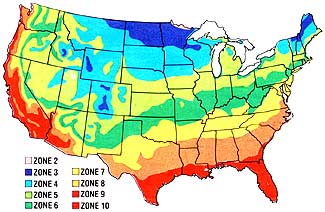

The frost reaches its gnarled fingers deep into the dark earth . . . and on windless, crystalline nights trees creak as temperatures plummet. The garden, wrapped in winter's dreamless sleep, awaits next spring's awakening
warmth. Get out the new seed catalogs, and-as the family basks in the wood fire's glow-plan next summer's successes.
Here's a summary, arranged by climatic zone, of the earliest planting dates for spring crops. The letter "s" indicates that seedlings can be set out at the time specified . . . "J" stands for January . . . and "F" for February. Zone 10 (last frost about February 1): beets J/F, broccoli s J, brussels sprouts s J, cabbage s J/F, cantaloupe late F, carrots J/F, cauliflower s J, celery J, collards s J/F, corn F, cucumbers late F, eggplant s F, endive F, kale J, kohlrabi J, leeks J, lettuce J, mustard J/F, onions early J, parsley J, peas J/F, peppers s F, potatoes J/F, radishes J/F, spinach J/F, summer squash F, Swiss chard J/F, tomatoes s F, turnips J/F. Zone 9 (last frost about March 1): beets F, broccoli s F, brussels sprouts s F, cabbage s mid-J/F, carrots F, cauliflower s mid-J/mid-F, celery F, collards s mid-J/F, endive F, kale F, kohlrabi F, leeks mid-J/mid-F, lettuce J/F, mustard F, onions early J, parsley J, peas J/F, potatoes mid-J/F, radishes J/F, spinach J/F, Swiss chard F, turnips mid-J/F.
Zone 8 (last frost about March 15): beets mid-F, broccoli s mid-F, brussels sprouts s mid-F, cabbage s F, carrots mid-F, cauliflower s F, collards s mid-F, endive mid-F, kale mid-F, kohlrabi midF, leeks F, lettuce F, mustard mid-F, onions F, parsley mid-F, peas F, potatoes F, radishes mid-J/F, spinach mid-J/F, Swiss chard mid-F, turnips F.
Zone 7 (last frost about April 1): cabbage s mid-F, cauliflower s mid-F, leeks mid-F, lettuce mid-F, onions mid-F, peas mid-F, potatoes mid-F, radishes mid-F, spinach F, turnips mid-F.
Zone 6 and north: Bundle up and keep on planning.
NEW FOR '82
New varieties for the 1982 gardening season abound, and we'll start our annual survey-as usual-with the All-America selections. This year the winning vegetables are a toothsome pair of squash. A new bush scallop variety, called Peter Pan, matures five days earlier than other "patty pan" squash . . . sets large numbers of meaty fruits on compact, runnerless plants . . . and is resistant to many kinds of weather stress. The second of the two Bronze Medal winners, Jersey Golden Acorn, is a dual-purpose fruit (much like the popular Kuta) that can be eaten young as a summer squash or allowed to mature on the vine and stored for winter feasting. The summer version of the Jersey Golden-which is table-ready just 50 days after sowing-tastes like sweet corn . . . while the fully grown fruit is sweet and tender, with less fiber than green acorn squash.
From the Corn Belt orchards of Henry Field comes a remarkable new pear that offers a double harvest. When picked in August, about two months before maturity, Turnbull Giant pears have the tart flavor and crisp, juicy flesh of a fine apple . . . with none of the grainy texture or tough skin usually associated with unripe pears. Leave some on the tree, though, and in a couple of months you'll have a crop of sweet, butter-smooth fruit, dripping with juice.
Burpee's 1982 catalog features six vegetable introductions for 1982. There are two new squash: Richgreen zucchini (its open habit helps you spot the dark green fruits before they reach baseball-bat size) and Early Acorn Hybrid (a semi-bush variety that matures a good-sized crop close to the plant's crown). Zippy Hybrid pepper is mildly hot and resembles a cayenne in all but pungency. Bonanza broccoli puts forth a strong central head and then follows with lots of side shoots. Two Seasons Hybrid Chinese cabbage holds forth the promise of both spring and fall crops for those who can't get enough of the delicious green, and the Basket King tomato bears clusters of four to seven fruits on its cascading branches (it's ideal for pot culture).
One of our favorite small mail order houses, Epicure Seeds, has combed the European catalogs and brought back a handful of new varieties. There's Pirat lettuce (a speckled-leaf butterhead known in Germany as Sprenkel) . . . the Di Brindisi melon from Italy (delicious as an antipasto dish when accompanied by prosciutto) . . . the succulent Meraviglia di Venezia yellow pole bean . . . Winter Density lettuce (a cross between butterhead and romaine, with the sweetness of the former and the vigor of the latter) . . . and a French cut-and-come-again lettuce that's easier to eat than it is to pronounce: Feuille de Chene Blonde.
Joseph Harris Seeds has long been known for its trustworthy cultivars. This year the company is featuring four new vegetables: Bush Kentucky Wonder snap beans (with all the flavor of the pole type, but on sturdy 20-inch plants) . . . Silver Prince corn (it's similar to the highly popular Silver Queen but earlier, more vigorous, and with a freshness-preserving "sugar extender" gene) . . . Sugar Rae snap pea (abundant crops on vines 26-30 inches high) . . . and Symphony Bicolor sweet corn (combining the tenderness and flavor of hybrid types with the sweetness of the "super sweet" kinds). See page 166, for the names and addresses of these and other mail order firms.
|
 |
|
|